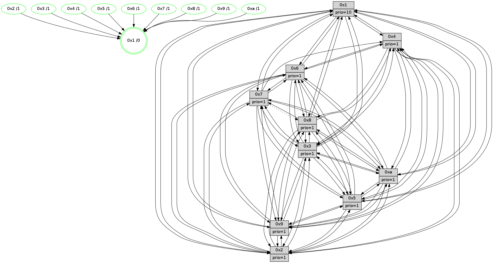

>> << IDX [start] -100 -25 -5 +0 +5 +25 +100 [1440.34387517]
 Previous packets
----------------------------------------------------------------------
1435.615086 beacon01(faad) #0 coord=01,02,03,04,05,06,07,0a,09,08 cycle=688.0ms assoc
-- color-indic=1 64 6d 96
1435.625069 beacon02(faad) #0 coord=01,02,03,04,05,06,07,0a,09,08 cycle=688.0ms assoc 64 fe a7
1435.635069 beacon03(faad) #0 coord=01,02,03,04,05,06,07,0a,09,08 cycle=688.0ms assoc 64 84 ea
1435.645069 beacon04(faad) #0 coord=01,02,03,04,05,06,07,0a,09,08 cycle=688.0ms assoc 64 f3 00
1435.655069 beacon05(faad) #0 coord=01,02,03,04,05,06,07,0a,09,08 cycle=688.0ms assoc 64 89 4d
1435.665069 beacon06(faad) #0 coord=01,02,03,04,05,06,07,0a,09,08 cycle=688.0ms assoc 64 07 9a
1435.675070 beacon07(faad) #0 coord=01,02,03,04,05,06,07,0a,09,08 cycle=688.0ms assoc 64 7d d7
1435.685073 beacon0a(faad) #0 coord=01,02,03,04,05,06,07,0a,09,08 cycle=688.0ms assoc 64 0c dc
1435.705075 beacon08(faad) #0 coord=01,02,03,04,05,06,07,0a,09,08 cycle=688.0ms assoc 64 f8 46
1435.716609 [Hello(10): seq=848 sym=6,2,3,8,7,5,9,4,1 sysInfo=hasWarning stat=6:13,13,3,5/2:7,7,7,0/3:12,5,12,15/8:13,5,5,4/7:4,12,3,10/5:4,13,0,1/9:8,14,3,1/4:10,4,15,3/1:5,1,8,1]
1435.719299 [Hello(9): seq=859 sym=2,5,3,4,7,6,8,10,1 sysInfo=hasWarning stat=2:10,2,3,11/5:13,10,3,8/3:6,6,14,4/4:5,1,11,3/7:2,11,11,5/6:10,8,1,15/8:3,9,10,7/10:15,5,7,0/1:5,0,11,1]
1435.722329 [STC(1) #0.249 tree-change,inconsistent-stability,stable,to-color d=0]
1435.723931 [Hello(8): seq=859 sym=5,2,3,9,6,4,10,1 sysInfo=hasWarning stat=5:1,10,9,1/2:8,7,3,12/3:1,8,9,4/9:14,13,11,5/6:8,7,3,0/4:13,9,5,2/10:12,12,1,5/1:3,14,13,0]
1435.726650 [Color(8) seq=514 @0:0 prio=1]
1435.727907 [Hello(7): seq=915 sym=2,3,5,6,4,8,9,10,1 sym= sysInfo=hasWarning stat=]
1435.730736 [Color(7) seq=443 @0:0 prio=1]
1435.734273 PARSE ERROR************************
Traceback (most recent call last):
File "PacketAnalysis.py", line 167, in showOperaPacket
structPacket = OperaPacketParse.parsePacket(rawPacket)
File "../../pkg-python/HipSens/Core/OperaPacketParse.py", line 461, in parsePacket
return parseHelloMessage(data)
File "../../pkg-python/HipSens/Core/OperaPacketParse.py", line 109, in parseHelloMessage
sysInfo,stability,colorInfo = struct.unpack("!HBB", linkList[0:4])
error: unpack requires a string argument of length 4
48 30 04 00 03 93 00 02 02 10 05 00 08 00 06 00 02 00 03 00 09 00 0a 00 01 00 53 04 00 00 00 00 4c 10 2b 60 00 10 05 ea 1d f3 f6 a6 21 3c e6 d0 1d 9d 53 10
1435.738872 [Color(4) seq=454 @0:0 prio=1]
1435.740996 [Color(1) seq=595 @0:0 prio=10]
----------------------------------------------------------------------
1436.403218 beacon01(faad) #0 coord=01,02,03,04,05,06,07,0a,09,08 cycle=688.0ms assoc
-- color-indic=1 64 79 f8
1436.413201 beacon02(faad) #0 coord=01,02,03,04,05,06,07,0a,09,08 cycle=688.0ms assoc 64 ea c9
1436.423200 beacon03(faad) #0 coord=01,02,03,04,05,06,07,0a,09,08 cycle=688.0ms assoc 64 90 84
1436.433200 beacon04(faad) #0 coord=01,02,03,04,05,06,07,0a,09,08 cycle=688.0ms assoc 64 e7 6e
1436.443200 beacon05(faad) #0 coord=01,02,03,04,05,06,07,0a,09,08 cycle=688.0ms assoc 64 9d 23
1436.453199 beacon06(faad) #0 coord=01,02,03,04,05,06,07,0a,09,08 cycle=688.0ms assoc 64 13 f4
1436.463201 beacon07(faad) #0 coord=01,02,03,04,05,06,07,0a,09,08 cycle=688.0ms assoc 64 69 b9
1436.473205 beacon0a(faad) #0 coord=01,02,03,04,05,06,07,0a,09,08 cycle=688.0ms assoc 64 18 b2
1436.493207 beacon08(faad) #0 coord=01,02,03,04,05,06,07,0a,09,08 cycle=688.0ms assoc 64 ec 28
1436.504756 [Hello(1): seq=825 sym=4,2,9,5,10,3,8,6,7 sysInfo=coloring-mode-on,ColoringModeRequestCalled stat=4:3,4,14,4/2:6,11,7,5/9:2,12,8,2/5:2,6,11,9/10:7,15,11,8/3:12,10,10,11/8:2,14,9,4/6:13,5,8,2/7:1,0,0,2]
1436.508916 [STC(10)->1 #0.249 tree-change,inconsistent-stability,stable,to-color d=1]
1436.510875 [Color(10) seq=505 @0:0 prio=1]
1436.513380 [STC(9)->1 #0.249 tree-change,inconsistent-stability,stable,to-color d=1]
1436.514662 [Hello(2): seq=912 sym=4,5,7,6,3,9,8,10,1 sysInfo=hasWarning stat=4:1,10,12,14/5:5,10,3,3/7:0,8,15,2/6:4,6,1,1/3:8,15,2,0/9:1,14,9,10/8:0,7,8,13/10:15,4,8,11/1:11,4,8,0]
1436.517403 [Hello(3): seq=916 sym=1,7,6,2,4,8,9,10,5 sysInfo=hasWarning stat=1:1,1,0,0/7:2,7,1,15/6:3,1,7,2/2:2,5,1,0/4:10,15,3,14/8:11,7,9,6/9:3,11,13,1/10:14,6,3,5/5:13,2,1,1]
1436.522475 [STC(3)->1 #0.249 tree-change,inconsistent-stability,stable,to-color d=1]
1436.524450 [Color(3) seq=545 @0:0 prio=1]
1436.525783 [STC(6)->1 #0.249 tree-change,inconsistent-stability,stable,to-color d=1]
1436.527333 [STC(5)->1 #0.249 tree-change,inconsistent-stability,stable,to-color d=1]
1436.528701 [Color(6) seq=548 @0:0 prio=1]
1436.531217 [TreeStatus(5)-.->1 #0.249 tree-change,inconsistent-stability,stable child=1]
1436.536770 [STC(2)->1 #0.249 tree-change,inconsistent-stability,stable,to-color d=1]
1436.540664 [TreeStatus(2)-.->1 #0.249 tree-change,inconsistent-stability,stable child=1]
1436.544077 [Color(2) seq=492 @0:0 prio=1]
----------------------------------------------------------------------
1437.191347 beacon01(faad) #0 coord=01,02,03,04,05,06,07,0a,09,08 cycle=688.0ms assoc
-- color-indic=1 64 c5 fd
1437.201330 beacon02(faad) #0 coord=01,02,03,04,05,06,07,0a,09,08 cycle=688.0ms assoc 64 56 cc
1437.211329 beacon03(faad) #0 coord=01,02,03,04,05,06,07,0a,09,08 cycle=688.0ms assoc 64 2c 81
1437.221330 beacon04(faad) #0 coord=01,02,03,04,05,06,07,0a,09,08 cycle=688.0ms assoc 64 5b 6b
1437.231331 beacon05(faad) #0 coord=01,02,03,04,05,06,07,0a,09,08 cycle=688.0ms assoc 64 21 26
1437.241329 beacon06(faad) #0 coord=01,02,03,04,05,06,07,0a,09,08 cycle=688.0ms assoc 64 af f1
1437.251331 beacon07(faad) #0 coord=01,02,03,04,05,06,07,0a,09,08 cycle=688.0ms assoc 64 d5 bc
1437.261335 beacon0a(faad) #0 coord=01,02,03,04,05,06,07,0a,09,08 cycle=688.0ms assoc 64 a4 b7
1437.281335 beacon08(faad) #0 coord=01,02,03,04,05,06,07,0a,09,08 cycle=688.0ms assoc 64 50 2d
1437.293204 [Hello(10): seq=849 sym=6,2,3,8,7,5,9,4,1 sysInfo=hasWarning stat=6:13,14,4,5/2:8,8,8,1/3:13,6,13,15/8:14,6,5,4/7:5,13,3,10/5:5,13,1,2/9:9,14,4,1/4:11,5,15,3/1:6,2,9,1]
1437.296844 [Color(1) seq=596 @0:0 prio=10]
1437.299415 [Hello(7): seq=916 sym=2,3,5,6,4,9,10,1 asym=8 sysInfo=hasWarning stat=2:14,14,13,5/3:6,5,0,3/5:4,7,0,4/6:5,2,13,12/4:10,10,10,2/9:5,6,12,2/10:2,4,5,7/1:11,4,9,0/8:4,8,1,0]
1437.302540 [Hello(4): seq=916 sym=5,8,6,2,3,9,10,1 sysInfo= stat=5:0,6,12,3/8:0,1,0,0/6:10,15,6,0/2:4,0,14,2/3:7,11,7,15/9:13,4,2,2/10:1,13,7,14/1:14,10,13,1]
1437.305891 [Hello(8): seq=860 sym=5,2,3,7,9,6,4,10,1 sysInfo=hasWarning stat=5:1,10,10,2/2:9,8,4,13/3:2,9,10,4/7:0,1,0,0/9:15,13,12,5/6:9,8,4,0/4:14,10,5,2/10:13,12,2,5/1:4,15,13,0]
1437.308724 [Color(8) seq=515 @0:0 prio=1]
1437.311560 [Color(4) seq=455 @0:0 prio=1]
1437.314734 [Color(7) seq=444 @0:0 prio=1]
----------------------------------------------------------------------
1437.979479 beacon01(faad) #0 coord=01,02,03,04,05,06,07,0a,09,08 cycle=688.0ms assoc
-- color-indic=1 64 01 f3
1437.989463 beacon02(faad) #0 coord=01,02,03,04,05,06,07,0a,09,08 cycle=688.0ms assoc 64 92 c2
1437.999462 beacon03(faad) #0 coord=01,02,03,04,05,06,07,0a,09,08 cycle=688.0ms assoc 64 e8 8f
1438.009463 beacon04(faad) #0 coord=01,02,03,04,05,06,07,0a,09,08 cycle=688.0ms assoc 64 9f 65
1438.019462 beacon05(faad) #0 coord=01,02,03,04,05,06,07,0a,09,08 cycle=688.0ms assoc 64 e5 28
1438.029462 beacon06(faad) #0 coord=01,02,03,04,05,06,07,0a,09,08 cycle=688.0ms assoc 64 6b ff
1438.039463 beacon07(faad) #0 coord=01,02,03,04,05,06,07,0a,09,08 cycle=688.0ms assoc 64 11 b2
1438.049467 beacon0a(faad) #0 coord=01,02,03,04,05,06,07,0a,09,08 cycle=688.0ms assoc 64 60 b9
1438.069469 beacon08(faad) #0 coord=01,02,03,04,05,06,07,0a,09,08 cycle=688.0ms assoc 64 94 23
1438.080419 [Hello(1): seq=826 sym=4,2,9,5,10,3,8,6,7 sysInfo=coloring-mode-on,ColoringModeRequestCalled stat=4:4,5,14,4/2:7,12,8,6/9:2,12,9,2/5:3,6,12,10/10:8,0,12,8/3:13,11,11,11/8:3,15,9,4/6:13,6,9,2/7:2,1,0,2]
1438.084946 [Color(9) seq=476 @0:0 prio=1]
1438.086393 [Hello(3): seq=917 sym=1,7,6,2,4,8,9,10,5 sysInfo=hasWarning stat=1:2,2,0,0/7:3,8,1,15/6:3,2,8,2/2:2,6,2,1/4:11,0,3,14/8:12,8,9,6/9:3,11,13,1/10:15,6,3,5/5:13,2,2,2]
1438.089996 [Hello(5): seq=917 sym=7,6,4,3,1,9,8,10,2 sysInfo=hasWarning stat=7:1,14,2,1/6:14,5,15,5/4:7,4,9,0/3:1,4,14,2/1:3,11,5,0/9:4,11,1,11/8:5,12,8,5/10:3,8,7,9/2:6,5,13,8]
1438.093428 [Hello(2): seq=913 sym=4,5,7,6,3,9,8,10,1 sysInfo=hasWarning stat=4:2,11,12,14/5:5,10,3,3/7:1,9,15,2/6:4,6,1,1/3:8,15,2,0/9:1,14,9,10/8:1,8,8,13/10:0,4,9,11/1:12,5,8,0]
1438.096256 [Color(2) seq=493 @0:0 prio=1]
1438.098402 [Color(5) seq=453 @0:0 prio=1]
1438.100882 [Hello(6): seq=917 sym=3,2,5,4,7,9,8,10,1 sysInfo=hasWarning stat=3:5,12,5,0/2:8,0,5,1/5:10,5,9,5/4:6,8,13,9/7:12,11,10,0/9:8,11,1,11/8:4,1,3,7/10:7,3,9,13/1:6,7,13,1]
1438.103573 [Color(10) seq=506 @0:0 prio=1]
1438.105323 [Color(6) seq=549 @0:0 prio=1]
1438.109116 [Color(3) seq=546 @0:0 prio=1]
----------------------------------------------------------------------
1438.767612 beacon01(faad) #0 coord=01,02,03,04,05,06,07,0a,09,08 cycle=688.0ms assoc
-- color-indic=1 64 bd f6
1438.777595 beacon02(faad) #0 coord=01,02,03,04,05,06,07,0a,09,08 cycle=688.0ms assoc 64 2e c7
1438.787594 beacon03(faad) #0 coord=01,02,03,04,05,06,07,0a,09,08 cycle=688.0ms assoc 64 54 8a
1438.797595 beacon04(faad) #0 coord=01,02,03,04,05,06,07,0a,09,08 cycle=688.0ms assoc 64 23 60
1438.807593 beacon05(faad) #0 coord=01,02,03,04,05,06,07,0a,09,08 cycle=688.0ms assoc 64 59 2d
1438.817594 beacon06(faad) #0 coord=01,02,03,04,05,06,07,0a,09,08 cycle=688.0ms assoc 64 d7 fa
1438.827597 beacon07(faad) #0 coord=01,02,03,04,05,06,07,0a,09,08 cycle=688.0ms assoc 64 ad b7
1438.837601 beacon0a(faad) #0 coord=01,02,03,04,05,06,07,0a,09,08 cycle=688.0ms assoc 64 dc bc
1438.857600 beacon08(faad) #0 coord=01,02,03,04,05,06,07,0a,09,08 cycle=688.0ms assoc 64 28 26
1438.869147 [Hello(9): seq=861 sym=2,5,3,4,7,6,8,10,1 sysInfo=hasWarning stat=2:11,4,4,12/5:14,11,4,9/3:7,8,15,4/4:7,3,11,3/7:4,13,11,5/6:11,10,2,15/8:5,11,10,7/10:15,6,7,0/1:7,2,12,1]
1438.872141 [Hello(10): seq=850 sym=6,2,3,8,7,5,9,4,1 sysInfo=hasWarning stat=6:13,15,4,5/2:8,8,8,1/3:13,7,13,15/8:15,7,5,4/7:6,14,3,10/5:5,13,1,2/9:9,14,4,1/4:12,6,15,3/1:7,3,9,1]
1438.875824 [Hello(8): seq=861 sym=5,2,3,7,9,6,4,10,1 sysInfo=hasWarning stat=5:2,11,10,2/2:10,9,4,13/3:3,10,10,4/7:0,2,0,0/9:15,14,12,5/6:10,9,4,0/4:14,11,5,2/10:14,13,2,5/1:5,15,13,0]
1438.879114 [Hello(7): seq=917 sym=2,3,5,6,4,9,10,1 asym=8 sysInfo=hasWarning stat=2:15,15,13,5/3:7,6,0,3/5:5,8,0,4/6:6,3,13,12/4:10,10,10,2/9:5,7,12,2/10:3,5,5,7/1:12,4,9,0/8:4,8,1,0]
1438.881664 [Color(8) seq=516 @0:0 prio=1]
1438.883129 [Color(7) seq=445 @0:0 prio=1]
1438.887073 [Color(1) seq=597 @0:0 prio=10]
1438.895238 [Hello(4): seq=917 sym=5,8,6,2,3,9,10,1 sysInfo= stat=5:1,7,12,3/8:0,1,0,0/6:11,0,6,0/2:5,1,14,2/3:8,12,7,15/9:14,5,2,2/10:1,14,7,14/1:15,10,13,1]
1438.898911 [Color(4) seq=456 @0:0 prio=1]
----------------------------------------------------------------------
1439.555741 beacon01(faad) #0 coord=01,02,03,04,05,06,07,0a,09,08 cycle=688.0ms assoc
-- color-indic=1 64 89 ee
1439.565724 beacon02(faad) #0 coord=01,02,03,04,05,06,07,0a,09,08 cycle=688.0ms assoc 64 1a df
1439.575723 beacon03(faad) #0 coord=01,02,03,04,05,06,07,0a,09,08 cycle=688.0ms assoc 64 60 92
1439.585724 beacon04(faad) #0 coord=01,02,03,04,05,06,07,0a,09,08 cycle=688.0ms assoc 64 17 78
1439.595724 beacon05(faad) #0 coord=01,02,03,04,05,06,07,0a,09,08 cycle=688.0ms assoc 64 6d 35
1439.605724 beacon06(faad) #0 coord=01,02,03,04,05,06,07,0a,09,08 cycle=688.0ms assoc 64 e3 e2
1439.615725 beacon07(faad) #0 coord=01,02,03,04,05,06,07,0a,09,08 cycle=688.0ms assoc 64 99 af
1439.625730 beacon0a(faad) #0 coord=01,02,03,04,05,06,07,0a,09,08 cycle=688.0ms assoc 64 e8 a4
1439.645729 beacon08(faad) #0 coord=01,02,03,04,05,06,07,0a,09,08 cycle=688.0ms assoc 64 1c 3e
1439.656942 [Hello(1): seq=827 sym=4,2,9,5,10,3,8,6,7 sysInfo=coloring-mode-on,ColoringModeRequestCalled stat=4:5,6,14,4/2:8,13,8,6/9:3,13,9,2/5:4,7,12,10/10:8,1,12,8/3:14,12,11,11/8:3,15,9,4/6:14,7,9,2/7:2,1,0,2]
1439.660390 [STC(1) #0.250 tree-change,inconsistent-stability,stable,to-color d=0]
1439.665182 [Color(10) seq=507 @0:0 prio=1]
1439.668692 [Hello(3): seq=918 sym=1,7,6,2,4,8,9,10,5 sysInfo=hasWarning stat=1:3,3,0,0/7:4,9,1,15/6:3,2,8,2/2:2,6,2,1/4:12,1,3,14/8:13,9,9,6/9:4,11,13,1/10:0,6,3,5/5:13,2,2,2]
1439.672029 [Hello(2): seq=914 sym=4,5,7,6,3,9,8,10,1 sysInfo=hasWarning stat=4:3,12,12,14/5:5,11,3,3/7:2,10,15,2/6:5,7,1,1/3:8,0,2,0/9:2,14,9,10/8:2,9,8,13/10:1,5,9,11/1:13,6,8,0]
1439.674512 [Color(3) seq=547 @0:0 prio=1]
1439.676463 [Color(2) seq=494 @0:0 prio=1]
1439.678511 [Color(6) seq=550 @0:0 prio=1]
1439.679921 [Color(5) seq=454 @0:0 prio=1]